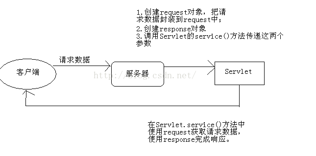

Request对象与Response对象
 |
服务器处理请求的流程：
（1）服务器每次收到请求时，都会为这个请求开辟一个新的线程。
由流程图可以看出，在JavaWeb的请求与响应中，最重要的两个参数为request以及response，这两参数在Servlet的service( )方法中。 |
首先看看Request
1、request概述
request是Servlet.service()方法的一个参数，类型为javax.servlet.http.HttpServletRequest。在客户端发出每个请求时，服务器都会创建一个request对象，并把请求数据封装到request中，然后在调用Servlet.service()方法时传递给service()方法，这说明在service()方法中可以通过request对象来获取请求数据。

request的功能可以分为以下几种：
（1）封装了请求头数据；
（2）封装了请求正文数据，如果是GET请求，那么就没有正文；
（3）request是一个域对象，可以把它当成Map来添加获取数据；
（4）request提供了请求转发和请求包含功能。
2、request域方法
request是域对象！在JavaWeb中一共四个域对象，其中ServletContext就是域对象，它在整个应用中只创建一个ServletContext对象。request其中一个，request可以在一个请求中共享数据。
一个请求会创建一个request对象，如果在一个请求中经历了多个Servlet，那么多个Servlet就可以使用request来共享数据。现在我们还不知道如何在一个请求中经历几个Servlet。
下面是request的域方法：
（1）void setAttribute(String name, Object value)：用来存储一个对象，也可以称之为存储一个域属性，例如：servletContext.setAttribute(“xxx”, “XXX”)，在request中保存了一个域属性，域属性名称为xxx，域属性的值为XXX。请注意，如果多次调用该方法，并且使用相同的name，那么会覆盖上一次的值，这一特性与Map相同；
（2）Object getAttribute(String name)：用来获取request中的数据，当前在获取之前需要先去存储才行，例如：String value = (String)request.getAttribute(“xxx”);，获取名为xxx的域属性；
（3）void removeAttribute(String name)：用来移除request中的域属性，如果参数name指定的域属性不存在，那么本方法什么都不做；
（4）Enumeration getAttributeNames()：获取所有域属性的名称；
3、request获取请求头数据
request与请求头相关的方法有：
String getHeader(String name)：获取指定名称的请求头；
Enumeration getHeaderNames()：获取所有请求头名称；
int getIntHeader(String name)：获取值为int类型的请求头。
4 request获取请求相关的其它方法
request中还提供了与请求相关的其他方法，有些方法是为了我们更加便捷的方法请求头数据而设计，有些是与请求URL相关的方法。
5 request获取请求参数
最为常见的客户端传递参数方式有两种：
浏览器地址栏直接输入：一定是GET请求；
超链接：一定是GET请求；
表单：可以是GET，也可以是POST，这取决与<form>的method属性值；
GET请求和POST请求的区别：
GET请求：
请求参数会在浏览器的地址栏中显示，所以不安全；
请求参数长度限制长度在1K之内；
GET请求没有请求体，无法通过request.setCharacterEncoding()来设置参数的编码；
POST请求：
请求参数不会显示浏览器的地址栏，相对安全；
请求参数长度没有限制；
下面是使用request获取请求参数的API：
l String getParameter(String name)：通过指定名称获取参数值；
l String[] getParameterValues(String name)：当多个参数名称相同时，可以使用方法来获取；
l Enumeration getParameterNames()：获取所有参数的名字；
l Map getParameterMap()：获取所有参数封装到Map中，其中key为参数名，value为参数值，因为一个参数名称可能有多个值，所以参数值是String[]，而不是String。
6、请求转发和请求包含（*****重点*****）
无论是请求转发还是请求包含，都表示由多个Servlet共同来处理一个请求。例如Servlet1来处理请求，然后Servlet1又转发给Servlet2来继续处理这个请求。
请求转发和请求包含
请求转发：rd.forward(request,response);
即当前Servlet设置的相应头有效，相应体无效。
请求转发与请求包含比较：
（1）如果在AServlet中请求转发到BServlet，那么在AServlet中就不允许再输出响应体，即不能再使用response.getWriter()和response.getOutputStream()向客户端输出，这一工作应该由BServlet来完成；如果是使用请求包含，那么没有这个限制；
（2）请求转发虽然不能输出响应体，但还是可以设置响应头的，例如：response.setContentType(”text/html;charset=utf-8”);
（3）请求包含大多是应用在JSP页面中，完成多页面的合并；
（4）请求转发大多是应用在Servlet中，转发目标大多是JSP页面；
 |
请求转发与重定向比较 （1）请求转发是一个请求，而重定向是两个请求；（2）请求转发后浏览器地址栏不会有变化，而重定向会有变化，因为重定向是两个请求；（3）请求转发的目标只能是本应用中的资源，重定向的目标可以是其他应用；（4）请求转发对AServlet和BServlet的请求方法是相同的，即要么都是GET，要么都是POST，因为请求转发是一个请求；（5）重定向的第二个请求一定是GET； |
Response
1、response概念：
response是Servlet.service方法的一个参数，类型为javax.servlet.http.HttpServletResponse。在客户端发出每个请求时，服务器都会创建一个response对象，并传入给Servlet.service()方法。response对象是用来对客户端进行响应的，这说明在service()方法中使用response对象可以完成对客户端的响应工作。
response对象的功能分为以下四种：
（1）设置响应头信息
（2）发送状态码
（3）设置响应正文
（4）重定向
2、response响应正文
response是响应对象，向客户端输出响应正文（响应体）可以使用response的响应流，repsonse一共提供了两个响应流对象：
（1）PrintWriter out = response.getWriter()：获取字符流；
（2）ServletOutputStreamout = response.getOutputStream()：获取字节流；
当然，如果响应正文内容为字符，那么使用response.getWriter()，如果响应内容是字节，例如下载时，那么可以使用response.getOutputStream()。
注意，在一个请求中，不能同时使用这两个流！也就是说，要么你使用repsonse.getWriter()，要么使用response.getOutputStream()，但不能同时使用这两个流。不然会抛出illegalStateException异常。
2.1 字符响应流
字符编码
在使用response.getWriter()时需要注意默认字符编码为ISO-8859-1，如果希望设置字符流的字符编码为utf-8，可以使用response.setCharaceterEncoding(“utf-8”)来设置。这样可以保证输出给客户端的字符都是使用UTF-8编码的！
但客户端浏览器并不知道响应数据是什么编码的！如果希望通知客户端使用UTF-8来解读响应数据，那么还是使用response.setContentType("text/html;charset=utf-8")方法比较好，因为这个方法不只会调用response.setCharaceterEncoding(“utf-8”)，还会设置content-type响应头，客户端浏览器会使用content-type头来解读响应数据。
缓冲区
response.getWriter()是PrintWriter类型，所以它有缓冲区，缓冲区的默认大小为8KB。也就是说，在响应数据没有输出8KB之前，数据都是存放在缓冲区中，而不会立刻发送到客户端。当Servlet执行结束后，服务器才会去刷新流，使缓冲区中的数据发送到客户端。
如果希望响应数据马上发送给客户端：
向流中写入大于8KB的数据；
调用response.flushBuffer()方法来手动刷新缓冲区
3、设置响应头信息
可以使用response对象的setHeader()方法来设置响应头！
使用该方法设置的响应头最终会发送给客户端浏览器！
（1）response.setHeader(“content-type”, “text/html;charset=utf-8”)：设置content-type响应头，该头的作用是告诉浏览器响应内容为html类型，编码为utf-8。而且同时会设置response的字符流编码为utf-8，即response.setCharaceterEncoding(“utf-8”)；
（2）response.setHeader("Refresh","5; URL=http://www.baidu.com")：5秒后自动跳转到百度主页。
4、设置状态码及其他方法
（1）response.setContentType("text/html;charset=utf-8")：等同与调用response.setHeader(“content-type”, “text/html;charset=utf-8”)；
（2）response.setCharacterEncoding(“utf-8”)：设置字符响应流的字符编码为utf-8；
（3）response.setStatus(200)：设置状态码；
（4）response.sendError(404, “您要查找的资源不存在”)：当发送错误状态码时，Tomcat会跳转到固定的错误页面去，但可以显示错误信息。
5、重定向（*****重点*****）
5.1 什么是重定向（两次请求）
当你访问http://www.sun.com时，你会发现浏览器地址栏中的URL会变成http://www.Oracle.com/us/sun/index.htm，这就是重定向了。重定向是服务器通知浏览器去访问另一个地址，即再发出另一个请求。
 |
5.2 如何完成重定向？
答：重定向的状态码为302，我们首先使用response对象向浏览器发送302的状态码，之后再设置一个Location，即给出一个可用的URL，由浏览器去访问新的URL，实现重定向。
列：
response.setHeader("Location", "http://www.baidu.com"); }} |
上面代码的作用是：当访问AServlet后，会通知浏览器重定向到百度主页。客户端浏览器解析到响应码为302后，就知道服务器让它重定向，所以它会马上获取响应头Location，然发出第二个请求。
还有一种快捷的重定向方法，即使用response.sendRedirect()方法。比如上面例子中的两句可以使用response.sendRedirect("http://www.baidu.com")代替。